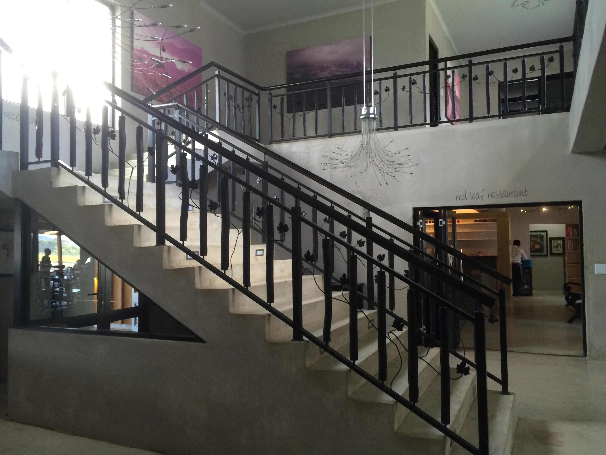

Tag 12 – Das mit dem Wein …
By Evita Bley
Wir stehen seeehr früh auf, also schon so gegen 9 Uhr … Heute ist ein großer Tag. Jeanines Mum und Willie kommen vorbei und wir begeben uns auf große Tour. Also diesmal nicht über die Berge und hinten rum wieder zurück, sondern hier gibt es die sogenannte Weinroute, die ich ja schon im „Franschhoek“-Post erwähnt habe.
Diesmal fahren wir aber nicht vorbei, sondern wollen genau dahin. Weine testen, das habe ich noch nie gemacht und ich glaube auch, dass ich grandios scheitern werde. Ich trinke Wein, um ein bisschen knülle zu werden und wenn er dann noch schmeckt Glück gehabt. Aber so richtig verschiedene Weine testen und vergleichen uiuiui, das ist mal was anderes. Wir haben ja schon ein bisschen geübt, als wir mit Jeanine bei „Triggerfish“ waren und dort Biere getestet haben. In Biere testen bin ich glaube wesentlich besser als mit Weinen. Aber hepp, wacker voran.
Es gibt sooooo viele Weingüter, wie soll man sich da entscheiden? Na so ein Glück, wir haben Jeanines Mutter dabei, sie ist Weinhändlerin und kennt sich deshalb enorm gut aus. Es gibt noch einen Haken, wir sind sechs Personen. Auch wenn wir ein seeehr großes Auto haben, ist es doch recht eng mit vier Erwachsenen auf der Rückbank. Aber wir sind ja alle schlank und die kurzen Strecken wird das kein Problem sein. Okay wir haben später gecheatet und Willie in den Kofferraum verfrachtet.
Erster Stopp „Aventuro“. Wir sind also schon 10 Minuten mit dem Auto unterwegs und zack erstes Opfer gefunden. Es ist ein bisschen spießig hier. Aber ich glaube das haben Weingüter so an sich. Es stehen Pferde auf der Wiese und es gibt eine sonnige Terrasse und ein hübsches Haus.
Jeanine wählt fünf Weine von der Karte aus. Sewis ist so nett und chauffiert uns durch die Gegend. Wir andern Fünf können uns also ordentlich zulaufen lassen, ich meine, wir können ausgiebig Weine testen.
Um es vorwegzunehmen, ich habe zu jedem Wein etwas aufgeschrieben, aber irgendwie bringt es glaube ich nicht so viel, das hier alles noch mit hinzuschreiben. Ich kann festhalten, Weine sind immer noch etwas, was ich nicht so ganz verstehe. Ich weiß aber, dass ich süße weiße Weine grundsätzlich bevorzuge. Ich komme auch mit diesen ganzen Begrifflichkeiten noch nicht so ganz gut klar. Was ist ein Shiraz und was ein Chenin Blanc und Merlot versus Chardonnay … Ja ich weiß, einige von euch werden mich jetzt schlagen wollen, aber sorry, ich kann dafür unglaublich schnell tippen.
Zurück zu unserer Tour, wir haben es uns auf der Terrasse im schönsten Sonnenschein gemütlich gemacht. Ja heute scheint die Sonne als wäre gestern nichts gewesen. Eine nette Dame bringt uns nacheinander die Weine, erklärt etwas dazu und wir sitzen fachmännisch da und schwenken unsere Gläser und stecken unsere Nasen hinein. Jeder dieser Weine würde in Deutschland ungefähr 6-9 Euro pro Flasche kosten. Wir bekommen hier ein fünf-Weine-Tasting für 30 Rand, was soviel heißt wie 2 Euro. Dafür kann man sich gut 2 Stunden genüsslich den Wein schmecken lassen und darüber reden und einen herrlichen Nachmittag genießen.
Wir fahren weiter, nächster Halt „Kleine Zalze“. Ursprünglich von Deutschen gegründet vor etlichen Jahren. Hier finde ich meinen Lieblingswein, einen Chenin Blanc Bush Vines 2015. Meine Kurzbeschreibung dazu ist: „Grüne Früchte beim ersten Riechen, verliert sich. Sehr spritzig und nicht zu trocken. Hervorragend!“ Damit kann wohl nur ich etwas anfangen, aber oft stand auch da „nicht meins“, „viel zu pelzig auf der Zunge“, „Schärfe, die ich nicht mag“. Dieser jedenfalls hat es mir angetan und zack hat Willie einen Kasten gekauft und wir bekommen zwei Falschen davon :)
Jeanine ist jetzt schon „gut dabei“ und hat unglaublich Spaß. Sie konnte es sich oft nicht nehmen lassen, von den anderen den Rest der Weine noch zu trinken, wenn er ihr gut schmeckte. Dafür wurde aber vorgesorgt und eine große Kühlbox im Auto offenbarte Chips, Biltong (in meinem Verständnis „geiles Fleisch“, aber vermutlich heißt es was anderes) und andere Leckereien.
Noch eine Station, „Beyerskloof“. Wie ich heraushörte ist es das Lieblingsweingut von Jeanines Mutter. Und ich kann nur sagen, wo sie recht hat, hat sie recht. Aber mir sind die meisten Weine etwas zu trocken. Bis auf den einen Roten, (Lagare), den sie eigentlich gar nicht mehr da haben und der als „ausverkauft“ auf der Karte steht. Unglaublich üppig und süß (endlich!). Daran könnte ich mich auch tot saufen.

Jedes dieser Weingüter ist ausgestattet mit einem fantastischen Blick, netter Bedienung und richtig guten Weinen. Was will man mehr. Man könnte vermutlich Wochen und Monate damit zubringen sich hier durch die Weingüter zu testen und schöne Nachmittage zu verbringen. Wir allerdings haben für heute genug und machen uns angetütert und vielleicht auch schon ein bisschen betrunken auf den Heimweg.
Schnell noch beim „Superstar“ etwas Wurst, Gemüse, Brot und Süßigkeiten kaufen und zu Hause wird der „Braai" angeschmissen. Wir essen alle zusammen, haben noch ein bisschen von dem leckeren Rotwein (uns wurde eine Flasche geschenkt) und wir schauen einen Film. Willie und Jeanines Mutter verabschieden sich und wir fallen hundemüde ins Bett. Morgen geht es zu Sewis Eltern nach Hause. Da soll es hervorragendes Essen geben. Ich bin wie immer gespannt.
P.S.: Wir werden Montag bis Mittwoch eine größere Tour mit dem Auto machen und ich werde den Rechner nicht mitnehmen. Also wird es den nächsten Eintrag erst am Mittwoch geben. Bzw. werde ich dann vermutlich gleich drei hochladen oder mal sehen, ich weiß es noch nicht.